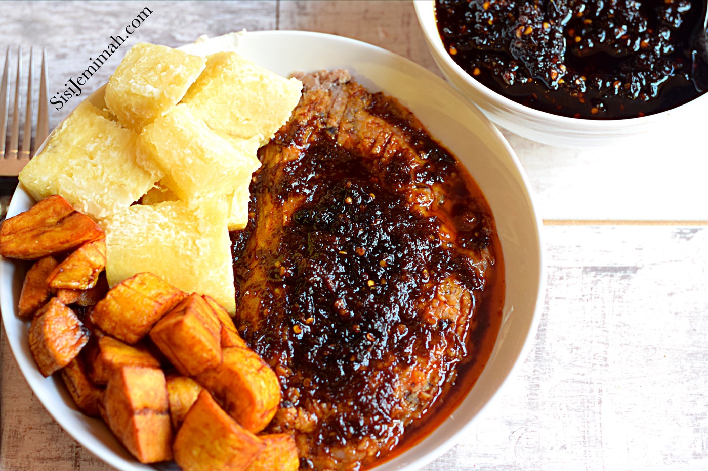

INGREDIENTS NEEDED
| INGREDIENTS | MEASUREMENT |
|---|---|
| Beans | 2 Cups |
| Water | Enough to cook till tender |
| Dried chili | 15 pieces |
| Red bells pepper | 2 pieces |
| Fresh onion | 3 large bulbs |
| Palm oil | 2 cups |
| salt | To taste |
| Cray fish | 1/4 cup |
| Seasoning cubes | 3 cubes |
| Ginger | 2 pieces |
PROCEDURE:
- Pick out the dirts and stones from the beans
- Rinse well and drain the beans a couple of times
- Pour the beans into a pot,and add water to cook until its tender,about 2hours
- Use either a masher,a spatula or a spoon to mash the beans well
PROCEDURE TO MAKE THE EWA AGANYIN SAUCE:
- Soak dry chillies and red bell peppers overnight,or soak with hot water for about 2 hours
- Blend with onions,ginger and about half a cup of water. Then,set aside
- Pour the palm oil into a pan,and allow to get hot but not bleached
- Add sliced onions,allow to cook for 5 minutes
- Pour in the blended pepper and allow to cook for 15 minutes
- Add the seasoning cubes,crayfish and salt to taste
- Leave to cook for 5-10 minutes,or till the colour of the pepper changes from Bright red to Dark red
- Serve the sauce over the Ewa Aganyin ,and eat with either Bread,Fried plantain,Garri or Pap

